Notions Python avancées — Master 1 DAT
Rapport de réalisation : code, routes et captures d'écran
Année universitaire 2025 / 2026
Atelier Mercier reçoit chaque nuit quatre fichiers (catalogue, ventes d'octobre, configuration des boutiques, journal de caisse). Le projet construit une chaîne complète qui répond à la question : quel est le chiffre d'affaires par boutique, et quelles boutiques ont atteint leur objectif ?
La chaîne suit les huit étapes du sujet : ingestion, contrôle qualité, entrepôt SQLite en étoile, appel du moteur tarifaire Java, restitution web avec FastAPI, administration, sécurité et mise en production.
L'environnement virtuel est créé avant toute installation, puis les dépendances sont installées
depuis requirements.txt (versions figées avec ==).
python -m venv .venv .venv\Scripts\activate pip install -r requirements.txt pip install pytest httpx # pour les tests
fastapi==0.165.0 uvicorn==0.40.0 jinja2==3.1.6 python-multipart==0.0.21 itsdangerous==2.2.0 JPype1==1.7.1
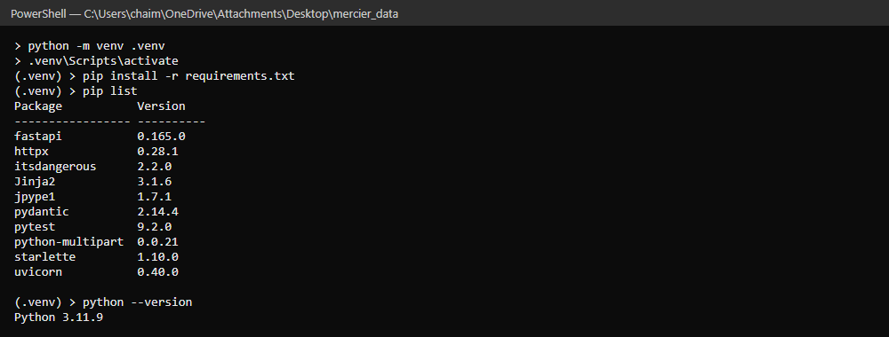
mercier_data/ ├── .venv/ environnement virtuel ├── donnees_sources/ fichiers reçus (jamais modifiés) ├── java/Tarif.java composant Java (moteur de remises) ├── mercier/ │ ├── __init__.py version du paquet │ ├── config.py configuration (variables d'environnement) │ ├── ingestion.py étape 1 │ ├── qualite.py étape 2 │ ├── entrepot.py étape 3 │ ├── tarif_java.py étape 4 │ ├── api.py étape 5 (+ routes des étapes 6 et 7) │ ├── indicateurs.py requêtes de restitution │ ├── administration.py étape 6 │ ├── securite.py étape 7 │ ├── cli.py ligne de commande │ ├── templates/ base, connexion, tableau, administration │ └── static/style.css ├── tests/ test_mercier.py (pytest), controle_complet.py ├── zone_brute/ lots horodatés (créé par l'ingestion) ├── entrepot.db entrepôt SQLite (créé par la chaîne) ├── captures/ captures d'écran du rapport ├── requirements.txt, Dockerfile, .dockerignore, .env.exemple, README.md
"""Configuration de la plateforme, lue dans l'environnement."""
import os
from pathlib import Path
RACINE = Path(__file__).resolve().parent.parent
SOURCES = Path(os.environ.get("MERCIER_SOURCES", RACINE / "donnees_sources"))
ZONE_BRUTE = Path(os.environ.get("MERCIER_ZONE_BRUTE", RACINE / "zone_brute"))
ENTREPOT = Path(os.environ.get("MERCIER_ENTREPOT", RACINE / "entrepot.db"))
CLASSES_JAVA = Path(os.environ.get("MERCIER_JAVA", RACINE / "java"))
CLE_SECRETE = os.environ.get("MERCIER_CLE_SECRETE", "cle-de-developpement-a-changer")
TAUX_TVA = float(os.environ.get("MERCIER_TVA", "0.20"))
def resume():
"""Renvoie la configuration effective, pour journalisation au démarrage."""
return {
"sources": str(SOURCES),
"entrepot": str(ENTREPOT),
"tva": TAUX_TVA,
"cle_par_defaut": CLE_SECRETE.startswith("cle-de-developpement"),
}
Les fichiers reçus ne sont jamais modifiés : ils sont copiés dans un lot horodaté de la zone brute, avec une empreinte SHA-256 et un manifeste.
def ingerer(sources=None, zone_brute=None, horodatage=None):
"""Copie les fichiers attendus dans un lot horodaté."""
sources = Path(sources or config.SOURCES)
zone_brute = Path(zone_brute or config.ZONE_BRUTE)
horodatage = horodatage or datetime.now().strftime("%Y%m%d_%H%M%S")
lot = zone_brute / horodatage
lot.mkdir(parents=True, exist_ok=True)
recus, manquants = [], []
for nom in FICHIERS_ATTENDUS:
origine = sources / nom
if not origine.exists():
manquants.append(nom)
continue
destination = lot / nom
shutil.copy2(origine, destination)
recus.append({"fichier": nom,
"octets": destination.stat().st_size,
"empreinte": empreinte(destination)[:16]})
manifeste = {"lot": horodatage, "source": str(sources),
"recus": recus, "manquants": manquants}
(lot / "_manifeste.json").write_text(
json.dumps(manifeste, ensure_ascii=False, indent=2), encoding="utf-8")
return manifeste
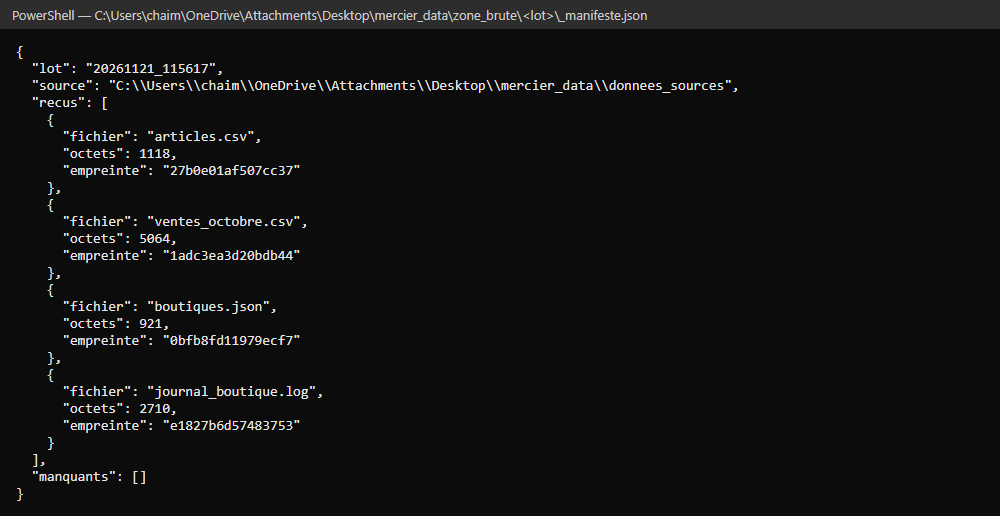
Six contrôles sont appliqués à chaque vente, du moins coûteux au plus coûteux. Une ligne écartée
reçoit un seul motif (le premier rencontré) et est tracée dans un objet Rejet.
Six anomalies (une par contrôle) ont été ajoutées en fin de ventes_octobre.csv
(lignes 125 à 130), comme dans le sujet ; le doublon de la ligne 89 était déjà présent.
def controler_ventes(lot, catalogue, codes_boutiques):
"""Valide chaque vente du lot. Renvoie (ventes valides, rejets)."""
valides, rejets, vues = [], [], set()
with open(Path(lot) / "ventes_octobre.csv", encoding="utf-8") as f:
for numero, ligne in enumerate(csv.DictReader(f), start=2):
# 1. champs obligatoires
if not all(ligne.get(c) for c in
("date", "boutique", "reference", "quantite")):
rejets.append(Rejet(numero, "champ obligatoire vide", ligne))
continue
# 2. date réelle
try:
jour = date.fromisoformat(ligne["date"])
except ValueError:
rejets.append(Rejet(numero, "date invalide", ligne))
continue
# 3. référence connue du catalogue
if ligne["reference"] not in catalogue:
rejets.append(Rejet(numero, "référence inconnue", ligne))
continue
# 4. boutique connue
if ligne["boutique"] not in codes_boutiques:
rejets.append(Rejet(numero, "boutique inconnue", ligne))
continue
# 5. valeurs numériques dans les bornes
try:
quantite = int(ligne["quantite"])
remise = int(ligne["remise_pourcent"] or 0)
except ValueError:
rejets.append(Rejet(numero, "valeur non numérique", ligne))
continue
if quantite < 1:
rejets.append(Rejet(numero, "quantité non positive", ligne))
continue
if not 0 <= remise <= 100:
rejets.append(Rejet(numero, "remise hors bornes", ligne))
continue
# 6. doublon exact
cle = (ligne["date"], ligne["boutique"], ligne["reference"],
quantite, remise)
if cle in vues:
rejets.append(Rejet(numero, "doublon exact", ligne))
continue
vues.add(cle)
valides.append({"date": jour.isoformat(),
"boutique": ligne["boutique"],
"reference": ligne["reference"],
"quantite": quantite,
"remise_pourcent": remise})
return valides, rejets
class Rejet:
"""Une ligne écartée, avec sa raison."""
def __init__(self, numero, motif, contenu):
self.numero = numero
self.motif = motif
self.contenu = contenu
def __str__(self):
return f"ligne {self.numero:>3} | {self.motif}"
def en_dictionnaire(self):
return {"numero": self.numero, "motif": self.motif,
"contenu": json.dumps(self.contenu, ensure_ascii=False)}
Modèle en étoile : la table de faits fait_vente au centre, et les dimensions
dim_article, dim_boutique, dim_date. S'ajoutent les tables
rejet, chargement et utilisateur.
PRAGMA foreign_keys = ON;
CREATE TABLE IF NOT EXISTS dim_article (
reference TEXT PRIMARY KEY,
nom TEXT NOT NULL,
categorie TEXT NOT NULL,
taille TEXT NOT NULL,
couleur TEXT NOT NULL,
prix_achat REAL NOT NULL,
prix_vente REAL NOT NULL
);
CREATE TABLE IF NOT EXISTS dim_boutique (
code TEXT PRIMARY KEY,
ville TEXT,
surface_m2 INTEGER NOT NULL DEFAULT 0,
objectif_mensuel REAL NOT NULL DEFAULT 0,
ouverture TEXT,
active INTEGER NOT NULL DEFAULT 1
);
CREATE TABLE IF NOT EXISTS dim_date (
jour TEXT PRIMARY KEY,
annee INTEGER NOT NULL,
mois INTEGER NOT NULL,
semaine INTEGER NOT NULL
);
CREATE TABLE IF NOT EXISTS fait_vente (
id INTEGER PRIMARY KEY AUTOINCREMENT,
jour TEXT NOT NULL REFERENCES dim_date (jour),
boutique TEXT NOT NULL REFERENCES dim_boutique (code),
reference TEXT NOT NULL REFERENCES dim_article (reference),
quantite INTEGER NOT NULL,
remise_pourcent INTEGER NOT NULL,
montant_brut REAL NOT NULL,
montant_net REAL NOT NULL,
UNIQUE (jour, boutique, reference, quantite, remise_pourcent)
);
CREATE TABLE IF NOT EXISTS rejet (
id INTEGER PRIMARY KEY AUTOINCREMENT,
lot TEXT NOT NULL,
numero INTEGER NOT NULL,
motif TEXT NOT NULL,
contenu TEXT,
UNIQUE (lot, numero)
);
CREATE TABLE IF NOT EXISTS chargement (
lot TEXT PRIMARY KEY,
execute_le TEXT NOT NULL,
acceptees INTEGER NOT NULL,
rejetees INTEGER NOT NULL,
inserees INTEGER NOT NULL
);
CREATE TABLE IF NOT EXISTS utilisateur (
id INTEGER PRIMARY KEY AUTOINCREMENT,
identifiant TEXT NOT NULL UNIQUE,
nom TEXT NOT NULL,
sel TEXT NOT NULL,
empreinte TEXT NOT NULL,
role TEXT NOT NULL CHECK (role IN ('administrateur', 'gerant')),
boutique TEXT REFERENCES dim_boutique (code)
);
CREATE INDEX IF NOT EXISTS idx_vente_boutique ON fait_vente (boutique);
CREATE INDEX IF NOT EXISTS idx_vente_jour ON fait_vente (jour);
Les dimensions sont mises à jour par UPSERT (ON CONFLICT … DO UPDATE). La contrainte
UNIQUE et ON CONFLICT DO NOTHING rendent le chargement idempotent,
et tout le lot est écrit dans une seule transaction (with con:).
def charger_ventes(con, ventes, catalogue, calcul_montant):
"""Insère les faits. Renvoie le nombre de lignes réellement ajoutées."""
avant = con.execute("SELECT COUNT(*) FROM fait_vente").fetchone()[0]
lignes = []
for vente in ventes:
prix = catalogue[vente["reference"]]["prix_vente"]
brut = round(prix * vente["quantite"], 2)
net = calcul_montant(prix, vente["quantite"], vente["remise_pourcent"])
lignes.append((vente["date"], vente["boutique"], vente["reference"],
vente["quantite"], vente["remise_pourcent"], brut, net))
con.executemany("""
INSERT INTO fait_vente
(jour, boutique, reference, quantite, remise_pourcent,
montant_brut, montant_net)
VALUES (?, ?, ?, ?, ?, ?, ?)
ON CONFLICT DO NOTHING
""", lignes)
apres = con.execute("SELECT COUNT(*) FROM fait_vente").fetchone()[0]
return apres - avant
def charger(lot, catalogue, configuration, ventes, rejets, calcul_montant,
chemin=None):
"""Charge un lot complet dans l'entrepôt, en une seule transaction."""
creer_schema(chemin)
con = connexion(chemin)
try:
with con: # valide à la sortie, annule si erreur
charger_articles(con, catalogue)
charger_boutiques(con, configuration)
charger_dates(con, ventes)
inserees = charger_ventes(con, ventes, catalogue, calcul_montant)
charger_rejets(con, lot, rejets)
con.execute("""
INSERT INTO chargement (lot, execute_le, acceptees, rejetees, inserees)
VALUES (?, datetime('now'), ?, ?, ?)
ON CONFLICT (lot) DO UPDATE SET
execute_le = excluded.execute_le,
inserees = excluded.inserees
""", (lot, len(ventes), len(rejets), inserees))
return {"lot": lot, "acceptees": len(ventes), "rejetees": len(rejets),
"inserees": inserees}
finally:
con.close()
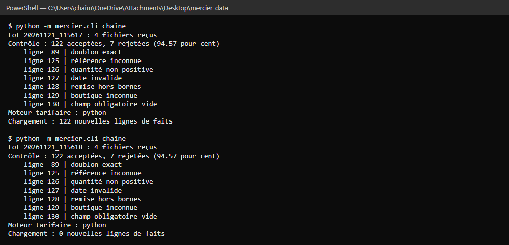
Le calcul du montant net est fait par la classe Java Tarif. Le module
tarif_java.py choisit automatiquement la meilleure voie : JPype, sinon sous-processus
java, sinon repli en Python (même règle).
/**
* Moteur de calcul tarifaire d'Atelier Mercier.
* Composant certifié par la comptabilité : ne pas réécrire.
*/
public class Tarif {
public static final double TAUX_TVA = 0.20;
/** Montant net d'une ligne de vente, remise déduite, arrondi au centime. */
public static double montantLigne(double prix, int quantite, int remisePourcent) {
if (prix < 0 || quantite < 1) {
throw new IllegalArgumentException("Prix negatif ou quantite nulle.");
}
if (remisePourcent < 0 || remisePourcent > 100) {
throw new IllegalArgumentException("Remise hors bornes.");
}
double net = prix * quantite * (1 - remisePourcent / 100.0);
return Math.round(net * 100.0) / 100.0;
}
/** Appel en ligne de commande : prix quantite remise. */
public static void main(String[] args) {
double prix = Double.parseDouble(args[0]);
int quantite = Integer.parseInt(args[1]);
int remise = Integer.parseInt(args[2]);
System.out.println(montantLigne(prix, quantite, remise));
}
}
@lru_cache(maxsize=1)
def moteur_disponible():
"""Choisit la meilleure voie disponible sur cette machine."""
try:
import jpype # noqa: F401
demarrer_jvm()
return "jpype"
except Exception:
pass
try:
subprocess.run(["java", "-version"], capture_output=True, check=True)
return "sous-processus"
except Exception:
return "python"
def montant_ligne(prix, quantite, remise=0):
"""Point d'entrée unique du reste de la plateforme."""
voie = moteur_disponible()
if voie == "jpype":
return montant_par_jpype(prix, quantite, remise)
if voie == "sous-processus":
return montant_par_sous_processus(prix, quantite, remise)
return montant_en_python(prix, quantite, remise)
Java (JDK) n'est pas installé sur le poste de développement : la détection retient donc la voie python, et le résultat est identique (35,82 pour 2 × 19,90 € à 10 %). Dans le conteneur Docker (JDK inclus), c'est la voie jpype qui doit être retenue (non exécuté ici : Docker Desktop n'était pas démarré).
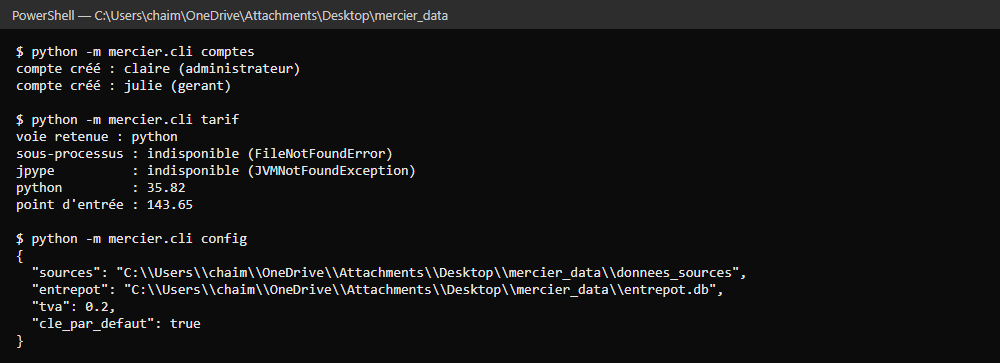
Lancement du serveur :
uvicorn mercier.api:app --reload
| Méthode | Route | Accès | Rôle |
|---|---|---|---|
| GET | /sante | aucune | Point de santé : état, version, nombre de faits |
| GET | /connexion | aucune | Formulaire de connexion |
| POST | /connexion | aucune | Vérifie identifiant / mot de passe, ouvre la session |
| GET | /deconnexion | aucune | Vide la session |
| GET | /?boutique=… | connecté | Tableau de bord, filtré par les droits |
| GET | /administration | administrateur | Page d'administration |
| POST | /administration/boutique | administrateur | Création d'une boutique |
| POST | /administration/gerant | administrateur | Nomination d'un gérant |
| POST | /administration/desactiver | administrateur | Désactivation d'une boutique |
| GET | /api/synthese | connecté | Ventes, pièces, CA, taux d'objectif (JSON) |
| GET | /api/boutiques | connecté | CA par boutique comparé à l'objectif (JSON) |
| GET | /api/categories | connecté | CA par catégorie (JSON) |
| GET | /api/qualite | administrateur | Dernier lot chargé et ses rejets (JSON) |
| GET | /docs | aucune | Documentation interactive générée par FastAPI |
La connexion à la base et les droits sont des dépendances FastAPI : la sécurité est dans la signature de la route.
def base():
"""Ouvre une connexion par requête, et la referme à la fin."""
con = entrepot.connexion()
try:
yield con
finally:
con.close()
def exige_connexion(requete: Request):
"""Dépendance des routes protégées."""
compte = requete.session.get("compte")
if compte is None:
raise HTTPException(status_code=401, detail="Connexion requise")
return compte
def exige_administrateur(compte=Depends(exige_connexion)):
"""Dépendance des routes réservées à l'administrateur."""
if compte["role"] != "administrateur":
raise HTTPException(status_code=403, detail="Réservé à l'administrateur")
return compte
@app.get("/", response_class=HTMLResponse, tags=["pages"])
def tableau_de_bord(requete: Request, boutique: str = "", con=Depends(base)):
compte = compte_courant(requete)
if compte is None:
return RedirectResponse("/connexion", status_code=303)
visibles = securite.boutiques_visibles(con, compte)
# Le filtre ne peut jamais élargir le périmètre autorisé.
perimetre = [boutique] if boutique in visibles else visibles
if boutique not in visibles:
boutique = ""
return templates.TemplateResponse(requete, "tableau.html", {
"compte": compte,
"synthese": indicateurs.synthese(con, perimetre),
"boutiques": indicateurs.par_boutique(con, perimetre),
"categories": indicateurs.par_categorie(con, perimetre),
"meilleures": indicateurs.meilleures_ventes(con, perimetre),
"semaines": indicateurs.evolution(con, perimetre),
"visibles": visibles,
"filtre": boutique,
"lot": indicateurs.qualite_dernier_lot(con),
})
def synthese(con, boutiques):
if not boutiques:
return {"ventes": 0, "pieces": 0, "chiffre_affaires": 0.0,
"objectif": 0.0, "taux_objectif": 0.0}
clause, params = _filtre(boutiques)
ligne = dict(con.execute(f"""
SELECT COUNT(*) AS ventes,
COALESCE(SUM(v.quantite), 0) AS pieces,
COALESCE(ROUND(SUM(v.montant_net), 2), 0) AS chiffre_affaires
FROM fait_vente AS v WHERE {clause}
""", params).fetchone())
clause_b, params_b = _filtre(boutiques, "code")
objectif = con.execute(
f"SELECT COALESCE(SUM(objectif_mensuel), 0) FROM dim_boutique WHERE {clause_b}",
params_b).fetchone()[0]
ligne["objectif"] = objectif
ligne["taux_objectif"] = round(100 * ligne["chiffre_affaires"] / objectif, 1) if objectif else 0.0
return ligne
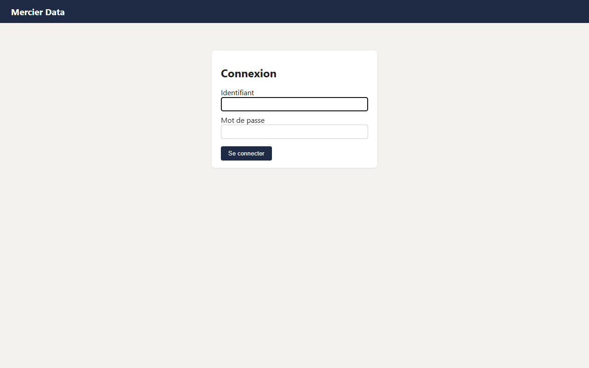
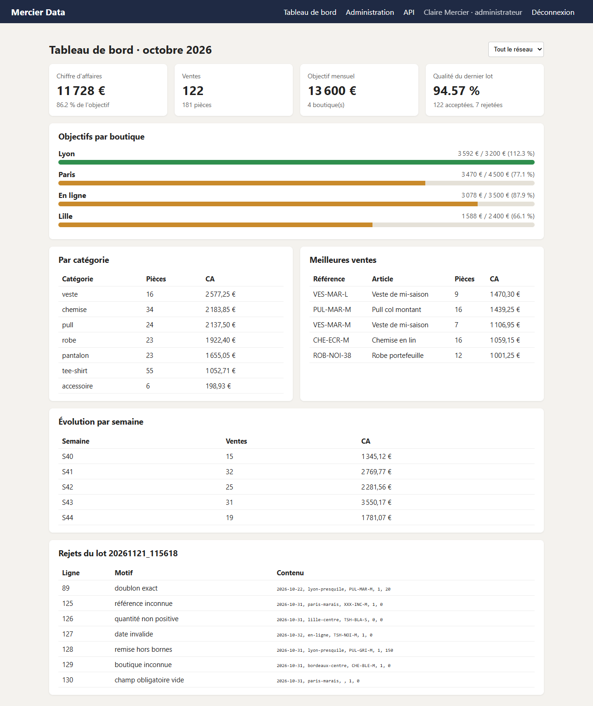
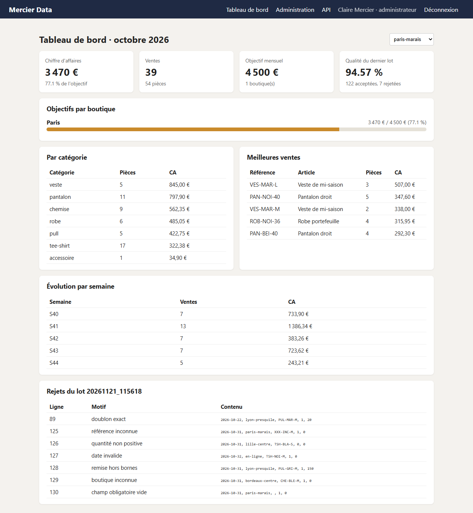
@app.get("/sante", tags=["exploitation"])
def sante(con=Depends(base)):
"""Point de contrôle, appelé par la supervision. Sans authentification."""
ventes = con.execute("SELECT COUNT(*) FROM fait_vente").fetchone()[0]
return {"etat": "ok", "version": __version__, "faits": ventes}
@app.get("/api/boutiques", tags=["api"])
def api_boutiques(compte=Depends(exige_connexion), con=Depends(base)):
"""Chiffre d'affaires par boutique, confronté à l'objectif."""
return indicateurs.par_boutique(con, securite.boutiques_visibles(con, compte))
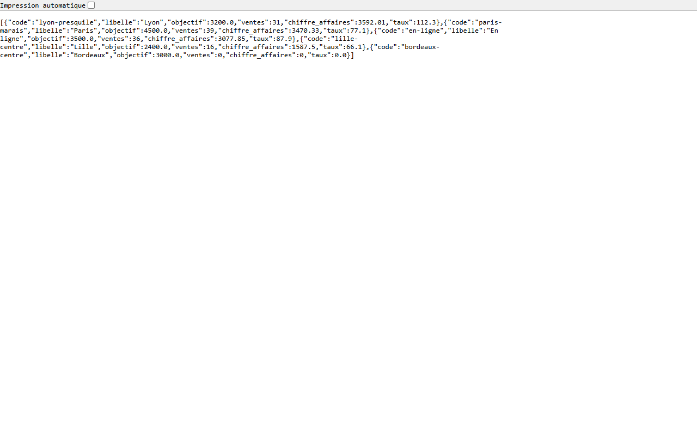
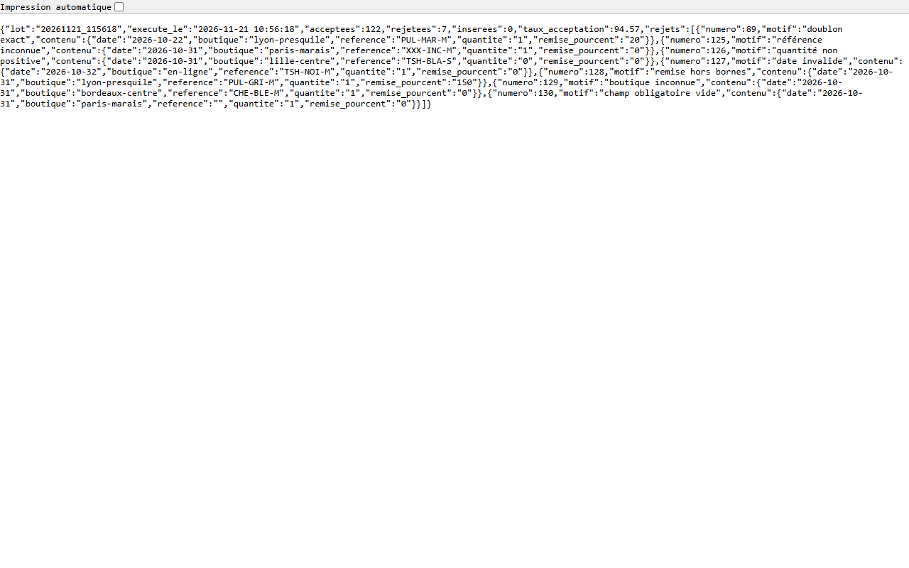
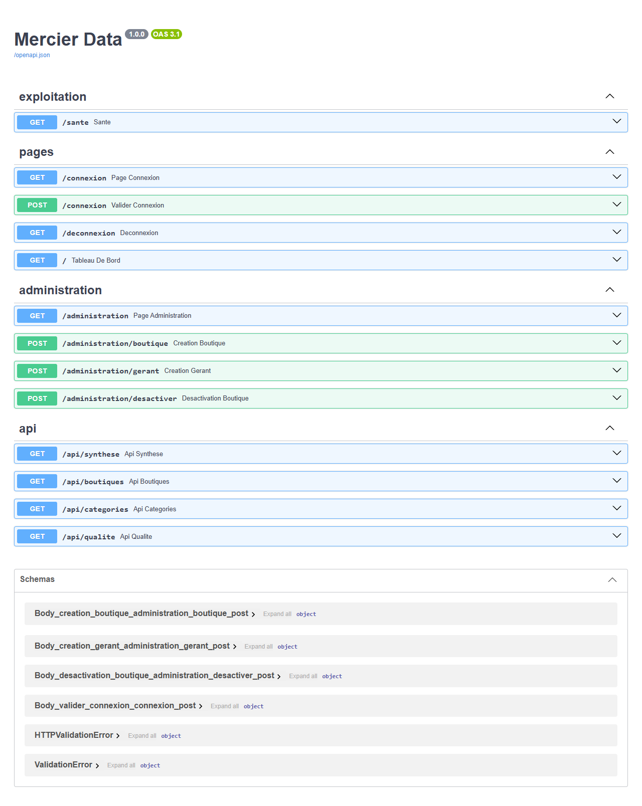
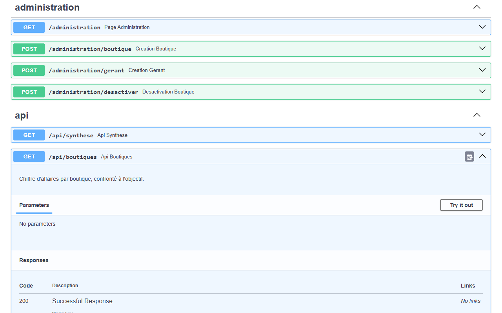
La validation se fait dans le module métier (et non dans le formulaire) : elle vaut donc aussi pour l'API. Le code d'une boutique est contrôlé par une expression régulière.
def valider_code(code):
"""Un code de boutique : minuscules, chiffres et traits d'union."""
if not MOTIF_CODE.match(code):
raise ValueError(
"Code invalide : minuscules, chiffres et traits d'union, "
"de 3 à 30 caractères, commençant par une lettre.")
return code
def creer_boutique(con, code, ville, surface_m2, objectif_mensuel,
ouverture=None):
"""Crée une boutique dans la dimension. Renvoie son code."""
valider_code(code)
if objectif_mensuel < 0:
raise ValueError("L'objectif ne peut pas être négatif.")
if con.execute("SELECT 1 FROM dim_boutique WHERE code = ?",
(code,)).fetchone():
raise ValueError(f"La boutique {code} existe déjà.")
con.execute("""
INSERT INTO dim_boutique
(code, ville, surface_m2, objectif_mensuel, ouverture, active)
VALUES (?, ?, ?, ?, ?, 1)
""", (code, ville or None, int(surface_m2), float(objectif_mensuel),
ouverture or date.today().isoformat()))
return code
def nommer_gerant(con, boutique, identifiant, nom, motdepasse):
"""Crée un compte gérant rattaché à une boutique existante."""
if not con.execute("SELECT 1 FROM dim_boutique WHERE code = ?",
(boutique,)).fetchone():
raise ValueError(f"Boutique inconnue : {boutique}")
if con.execute("SELECT 1 FROM utilisateur WHERE identifiant = ?",
(identifiant,)).fetchone():
raise ValueError(f"L'identifiant {identifiant} est déjà pris.")
return securite.creer_utilisateur(con, identifiant, nom, motdepasse,
"gerant", boutique)
@app.post("/administration/boutique", tags=["administration"])
def creation_boutique(code: str = Form(...), ville: str = Form(""),
surface_m2: int = Form(0),
objectif_mensuel: float = Form(0),
con=Depends(base),
compte=Depends(exige_administrateur)):
try:
with con:
administration.creer_boutique(con, code.strip().lower(),
ville.strip(), surface_m2,
objectif_mensuel)
except ValueError as erreur:
return RedirectResponse(f"/administration?erreur={quote(str(erreur))}",
status_code=303)
return RedirectResponse(f"/administration?message={quote(f'Boutique {code} créée')}",
status_code=303)
Après un envoi, la route redirige (code 303) : actualiser la page ne recrée pas la boutique.
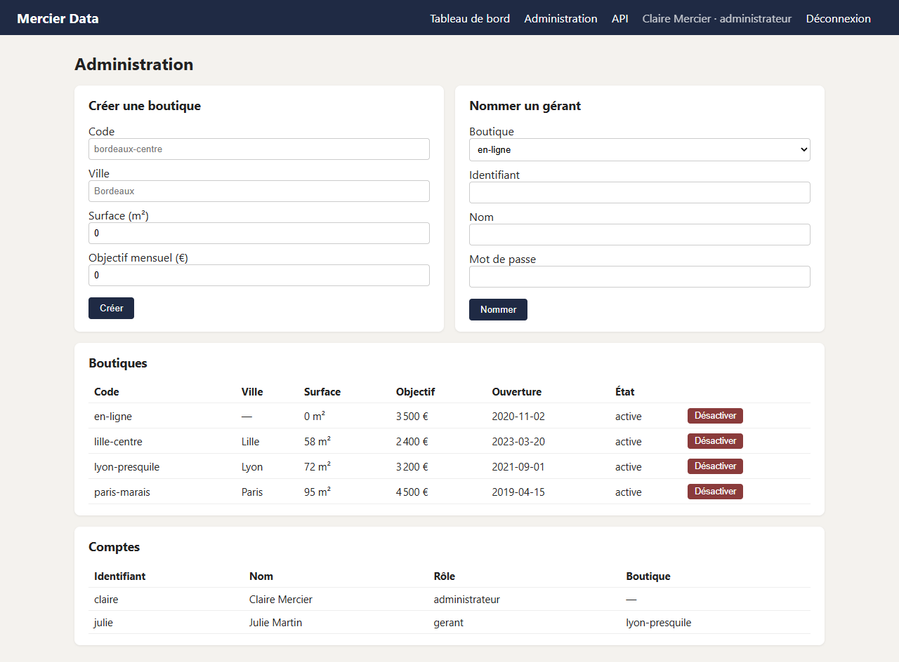
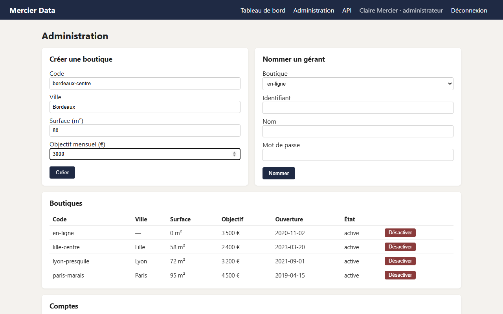
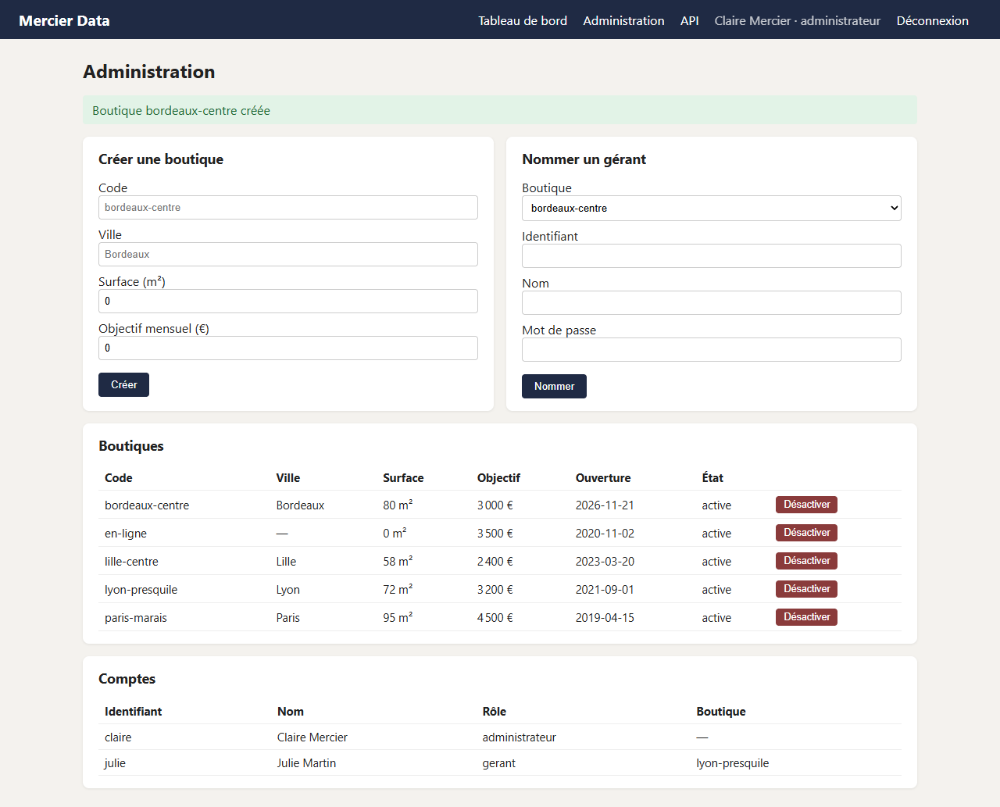
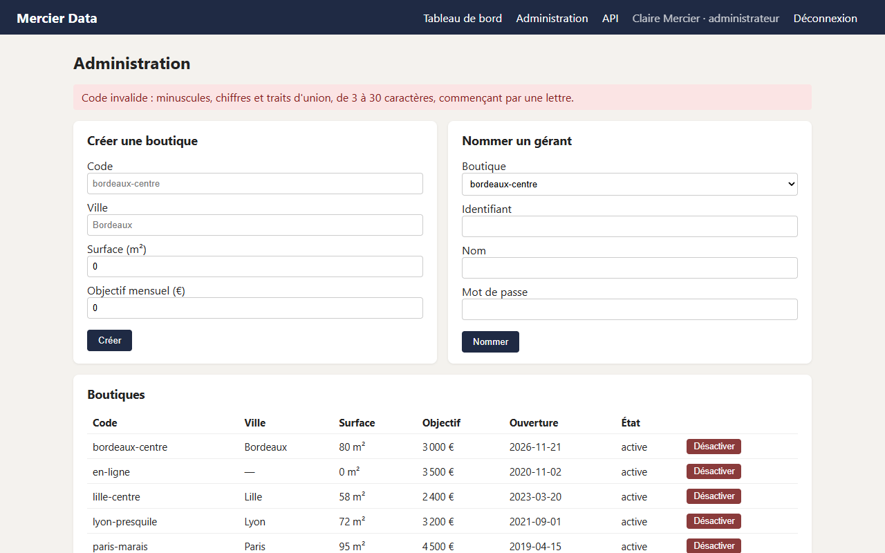
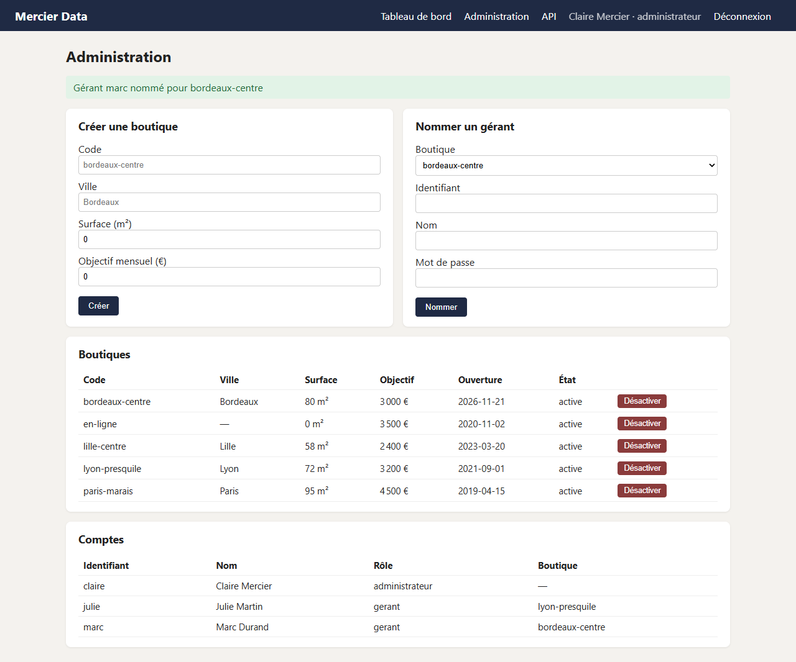
Aucun mot de passe n'est stocké : on stocke un sel aléatoire et une empreinte PBKDF2-SHA256 (200 000 itérations). La comparaison est faite en temps constant.
def hacher(motdepasse, sel=None):
"""Renvoie le couple (sel, empreinte) d'un mot de passe."""
sel = sel or secrets.token_hex(16)
empreinte = hashlib.pbkdf2_hmac("sha256", motdepasse.encode("utf-8"),
bytes.fromhex(sel), ITERATIONS)
return sel, empreinte.hex()
def verifier(motdepasse, sel, empreinte_attendue):
"""Vérifie un mot de passe en temps constant."""
_, empreinte = hacher(motdepasse, sel)
return hmac.compare_digest(empreinte, empreinte_attendue)
def authentifier(con, identifiant, motdepasse):
"""Renvoie le compte si les identifiants sont bons, sinon None."""
ligne = con.execute(
"SELECT * FROM utilisateur WHERE identifiant = ?",
(identifiant,)).fetchone()
if ligne is None:
# On hache quand même, pour que la durée de réponse ne révèle pas
# si l'identifiant existe.
hacher(motdepasse, secrets.token_hex(16))
return None
if not verifier(motdepasse, ligne["sel"], ligne["empreinte"]):
return None
return {"id": ligne["id"], "identifiant": ligne["identifiant"],
"nom": ligne["nom"], "role": ligne["role"],
"boutique": ligne["boutique"]}
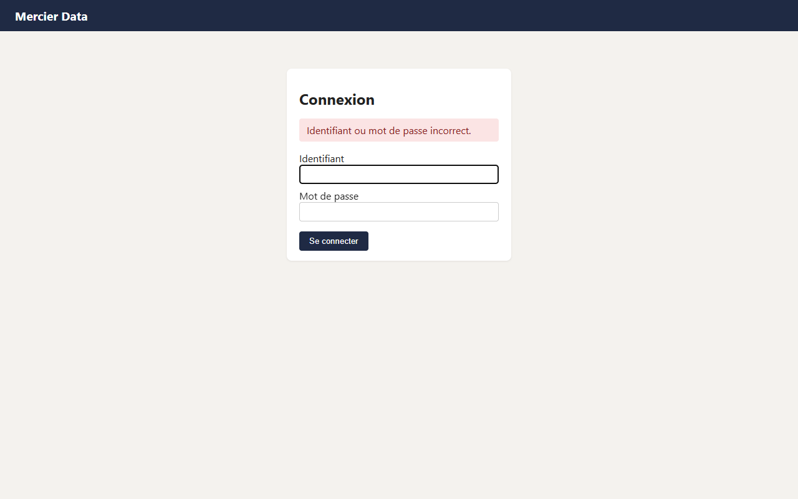
La session est un cookie signé avec la clé secrète (SessionMiddleware). Le
cloisonnement est appliqué dans la requête SQL : un gérant ne voit que sa boutique.
def boutiques_visibles(con, compte):
"""Les boutiques que ce compte a le droit de consulter.
C'est ici que se joue le cloisonnement : un gérant ne voit que la sienne.
"""
if compte["role"] == "administrateur":
return [l["code"] for l in con.execute(
"SELECT code FROM dim_boutique WHERE active = 1 ORDER BY code")]
return [compte["boutique"]] if compte["boutique"] else []
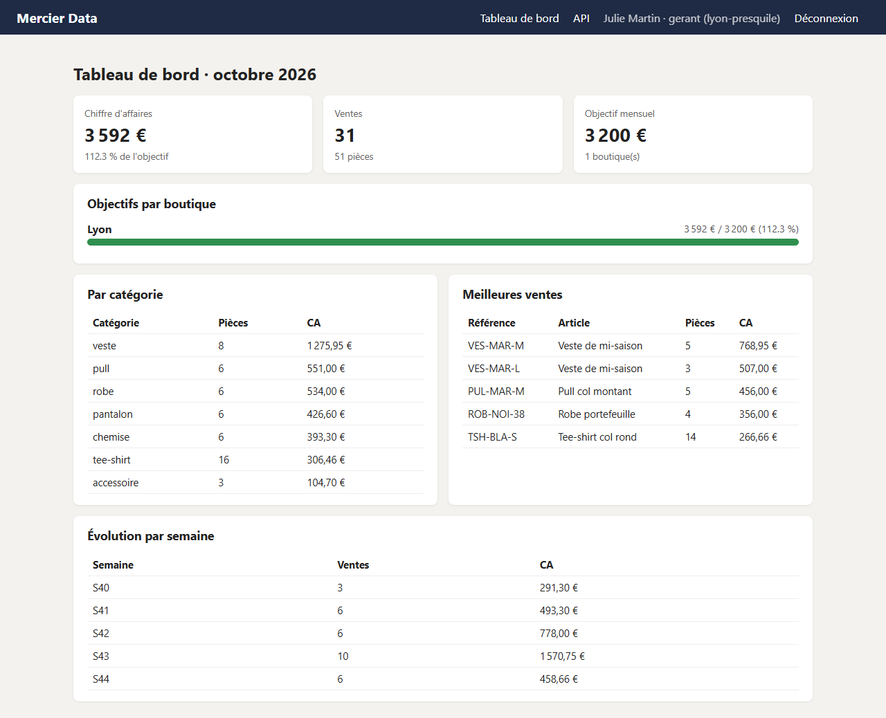
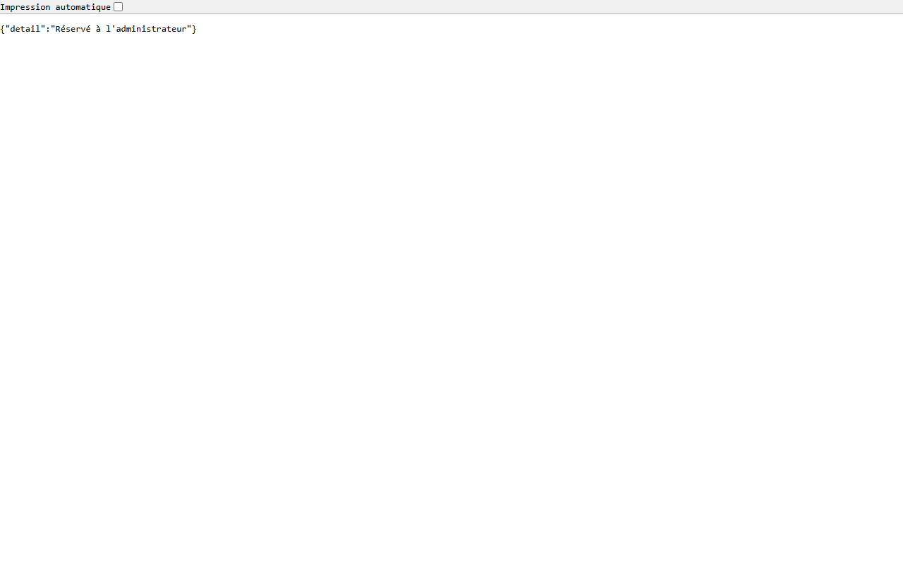

Script tests/controle_complet.py, exécuté sur le serveur lancé :
1. santé sans compte : 200 {'etat': 'ok', 'version': '1.0.0', 'faits': 122}
2. accueil sans compte : 303 /connexion
3. api sans compte : 401
4. mauvais mot de passe : /connexion?erreur=1
5. connexion gérante : 303 /
6. tableau de bord : 200
7. synthèse gérante : {'ventes': 31, 'pieces': 51, 'chiffre_affaires': 3592.01, 'objectif': 3200.0, 'taux_objectif': 112.3}
8. boutiques visibles : ['lyon-presquile']
9. admin interdit à julie: 403
10. api qualité interdite: 403
filtre interdit (julie demande paris) : False
11. synthèse admin : {'ventes': 122, 'pieces': 181, 'chiffre_affaires': 11727.69, 'objectif': 13600.0, 'taux_objectif': 86.2}
12. boutiques admin : ['lyon-presquile', 'paris-marais', 'en-ligne', 'lille-centre']
13. page admin : 200
14. création boutique : {'message': 'Boutique nantes-graslin créée'}
15. code invalide refusé : {'erreur': "Code invalide : minuscules, chiffres et traits d'union, de 3 à 30 caractères, commençant par une lettre."}
16. documentation : 200
| Claire, administratrice | Julie, gérante de Lyon | |
|---|---|---|
| Chiffre d'affaires | 11 728 € | 3 592 € |
| Ventes | 122 | 31 |
| Page d'administration | accessible | code 403 |
| API qualité | accessible | code 403 |
Les secrets viennent de l'environnement. .env.exemple est livré, .env
est exclu du dépôt. L'application refuse de démarrer en production avec la clé de développement.
MERCIER_SOURCES=./donnees_sources MERCIER_ENTREPOT=./entrepot.db MERCIER_JAVA=./java # À remplacer impérativement en production : MERCIER_CLE_SECRETE=changez-moi-par-une-valeur-aleatoire-longue
# Image de base contenant Python et un JRE, puisque le moteur
# tarifaire est en Java.
FROM eclipse-temurin:21-jdk-jammy
RUN apt-get update \
&& apt-get install -y --no-install-recommends python3 python3-pip \
&& rm -rf /var/lib/apt/lists/*
WORKDIR /app
# Les dépendances d'abord : cette couche reste en cache tant que
# requirements.txt ne change pas.
COPY requirements.txt .
RUN pip3 install --no-cache-dir -r requirements.txt
COPY . .
RUN javac java/Tarif.java
ENV MERCIER_ENTREPOT=/donnees/entrepot.db \
MERCIER_ZONE_BRUTE=/donnees/zone_brute
VOLUME ["/donnees"]
EXPOSE 8000
HEALTHCHECK --interval=30s --timeout=3s \
CMD python3 -c "import urllib.request; urllib.request.urlopen('http://localhost:8000/sante')"
CMD ["uvicorn", "mercier.api:app", "--host", "0.0.0.0", "--port", "8000"]
.venv __pycache__ *.pyc .pytest_cache entrepot.db zone_brute .env captures rapport
Seule différence avec le sujet : l'image de base est eclipse-temurin:21-jdk-jammy
au lieu de -jre, car la commande RUN javac java/Tarif.java nécessite le
compilateur, absent d'un JRE.
docker build -t mercier-data . docker run -p 8000:8000 -v mercier_donnees:/donnees -e MERCIER_CLE_SECRETE=<clé aléatoire> mercier-data
uvicorn mercier.api:app --host 0.0.0.0 --port 8000 --workers 4
Sept tests pytest, chacun sur un entrepôt temporaire (tmp_path) : ingestion,
contrôle qualité, idempotence, moteur tarifaire, empreintes différentes pour un même mot de passe,
code de boutique invalide, cloisonnement.
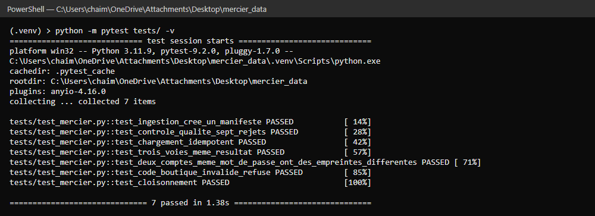
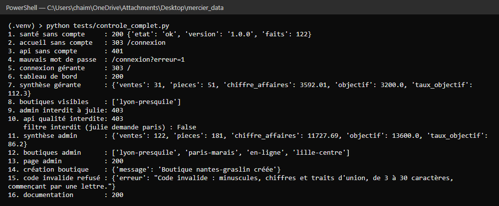
.venv\Scripts\activate python -m mercier.cli chaine # ingestion + qualité + chargement python -m mercier.cli comptes # comptes de démonstration uvicorn mercier.api:app --reload # puis ouvrir http://127.0.0.1:8000 python -m pytest tests/ -q
Comptes de démonstration (développement uniquement) : claire (administratrice) et
julie (gérante de lyon-presquile), mot de passe mercier2026.
La plateforme répond à la question de départ en une seconde : le chiffre d'affaires d'octobre est de 11 728 € pour un objectif de 13 600 € (86 %). Seule la boutique de Lyon dépasse son objectif (112 %). Les chiffres obtenus sont identiques à ceux du sujet (122 ventes acceptées, 7 rejetées, 94,57 %).